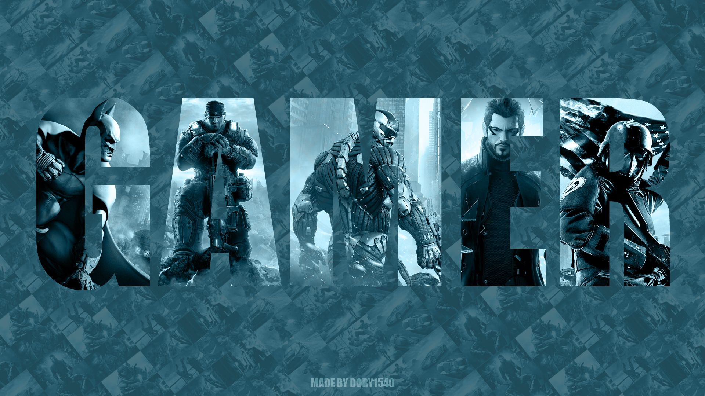

Gamer's Space
Выпуск №1
Скачать саундтреки из игр:
The Elder Scrolls V: Skyrim
Life is Strange
Assassin's Creed: Odyssey
Сегодня в выпуске:

- Обзор на игру "The Elder Scrolls V: Skyrim". Системные требования к ПК. Краткая история разработки.
О чем игра. Геймплейные особенности.
- Обзор на игру "Life is Strange". Системные требования
к ПК. Краткая история разработки. О чем игра. Геймплейные особенности.
- Обзор на игру "Assassin's Creed: Odyssey". Системные
требования к ПК. Краткая история разработки. О чем игра. Геймплейные особенности.
Автор-составитель: Черняков Александр
E-mail: alexanderchierniakov1996@gmail.com